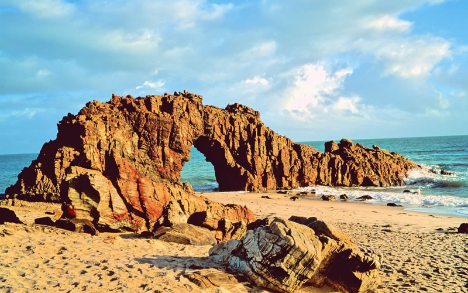

Encante-se com a magia dos parques
nacionais do Brasil
Os cinco parques nacionais mais conhecidos permitem a você
conhecer a diversidade natural do Brasil, uma experiência imperdível
para os amantes da natureza
Desperte em você um profundo apreço pela
beleza e pela importância da nossa flora e
fauna, enquanto você mergulha nas riquezas
que esses parques têm a oferecer!

Mergulhe na natureza ao explorar a exuberância dos Parques Nacionais Brasileiros! O
Brasil é lar de uma biodiversidade sem igual, convida você a se aventurar em seus
Parques Nacionais, santuários que guardam tesouros naturais de tirar o fôlego. Entre
em contato com a natureza exuberante, explore florestas impenetráveis, admire
cachoeiras majestosas e deixe-se encantar por praias de águas cristalinas.
Em 2022, mais de 21,6 milhões de visitantes embarcaram nessa
jornada inesquecível, explorando 137 unidades de conservação
espalhadas por todo o país. Neste post,
Os parques nacionais são espaços de preservação que guardam algumas das
paisagens naturais mais bonitas do país
revelamos para você quais são os cinco
Parques Nacionais mais visitados do Brasil,
convidando-o a desvendar seus encantos e
se conectar com a natureza em sua forma
mais pura.
Nossos parques possuem uma
biodiversidade de espécies nativas e uma imensidão de florestas
exuberantes, cachoeiras imperdíveis e praias de águas cristalinas. O Brasil
testemunhou o interesse renovado por quem busca uma conexão maior com
a natureza, conhecendo parques nacionais que protegem as florestas,
cânions, cavernas, variadas plantas e animais, além de paisagens
inesquecíveis.
Quantos parques nacionais
existem no Brasil?
Você sabia que o Brasil possui 74 parques
nacionais? Acessando o site do ICMBio você tem
acesso ao nome de todos os parques nacionais
do Brasil e ainda consegue saber mais detalhes
de vários deles.
O Brasil, lar de uma biodiversidade sem igual,
convida você a se aventurar em seus Parques
Nacionais, santuários que guardam tesouros
naturais de tirar o fôlego. Entre em contato com a
natureza exuberante, explore florestas
impenetráveis, admire cachoeiras majestosas e
deixe-se encantar por praias de águas cristalinas.
1. PARQUE NACIONAL DA TIJUCA (RJ)
O Parque Nacional da Tijuca, localizado no coração do Rio de Janeiro, é o parque mais
visitado do Brasil. E não é à toa: sua beleza é de tirar o fôlego. Este parque serve como
a porta de entrada para os turistas que desejam visitar o famoso Cristo Redentor, uma
das Sete Maravilhas do Mundo Moderno, e é também uma das maiores florestas
urbanas do mundo, com uma área de aproximadamente 3.953 hectares. Sua vasta
extensão abriga uma rica biodiversidade e inúmeras atrações naturais e culturais, como
trilhas, cachoeiras, e mirantes com vistas deslumbrantes da cidade. Somente em 2022,
o parque recebeu o dobro de visitantes em comparação com 2021, alcançando um total
de 3,5 milhões de visitantes. Este aumento significativo no número de turistas reflete
não apenas a popularidade do parque, mas também a crescente valorização dos
espaços naturais e a busca por atividades ao ar livre em tempos de retomada do
turismo. Além disso, o parque desempenha um papel crucial na preservação ambiental e na promoção da
conscientização ecológica, atraindo tanto turistas quanto moradores
locais em busca de tranquilidade e contato com a natureza.
O Parque Nacional da Tijuca, localizado no coração do Rio de Janeiro, é uma das maiores florestas urbanas do
mundo e
um verdadeiro tesouro natural.
Com uma área de aproximadamente 3.953 hectares, o parque
oferece aos visitantes uma
vasta gama de atrações
naturais e culturais. Entre suas
atrações mais famosas estão o
Pico da Tijuca, que, com 1.021
metros de altitude, oferece
vistas panorâmicas de tirar o
fôlego, e a Vista Chinesa, um
mirante que proporciona uma
bela vista da zona sul carioca.
Além disso, o parque abriga
várias cachoeiras, trilhas
ecológicas, e monumentos
históricos, como a Capela
Mayrink e a Cascatinha Taunay.
É também a porta de entrada
para o famoso Cristo Redentor,
um dos cartões-postais mais
icônicos do Brasil.
Os visitantes do Parque
Nacional da Tijuca desfrutam de
uma variedade de atividades ao
ar livre, que incluem
caminhadas, ciclismo, escalada,
rapel, e voo livre. O parque é um
destino popular tanto para
turistas quanto para moradores
locais, oferecendo um refúgio
verde dentro da metrópole
agitada. Além das atividades
recreativas, o parque também
promove a educação ambiental
e a conservação da biodiversidade, sendo o lar de uma
grande variedade de espécies
de flora e fauna. Observação de
aves e banhos de cachoeira são
outras atividades populares que
permitem aos visitantes se
conectar com a natureza. Com
uma infraestrutura que inclui
trilhas bem sinalizadas e áreas
de piquenique, esse é um
destino imperdível para quem
visita o Rio de Janeiro.